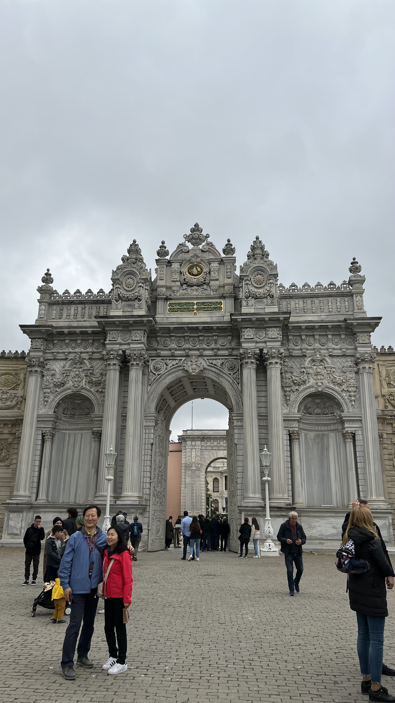

Istanbul
Om te beginnen zal ik eerst wat over de stad Istanbul zelf wat vertellen. Istanbul is een buitengewone stad die de grens tussen Europa en Azië markeert. Istanbul is met zijn enorme bevolking een van de meest bevolkte steden van Turkije. Het aantal inwoners varieert, maar het is niet ongebruikelijk dat het in de buurt komt van of zelfs de 15 miljoen overstijgt. De stad is een smeltkroes van verschillende culturen en achtergronden.
Ik heb twee keer Istanbul bezocht en wat is het een leuke grote stad. Je kan nooit alles hebben gezien zoveel valt er ook te doen. Mijn eerste ervaring in Istanbul was in Juli 2019. Ik verbleef er 2 weken met mijn famillie. Het was heerlijk weer, alleen is het net te warm om actief beziensvaardigheden gaan bezoeken. Uiteindelijk wil je in de zomer lekker elke dag naar het strand en is zo een trip in Istanbul niet heel rustgevend dan.
Mijn tweede keer was in Mei 2022. Ik verbleef er 5 dagen en was er met mijn moeder, tante, zus en nichten wat
een super leuke korte trip was en ook veel heb kunnen zien.
Daarom deel ik hier de bekendste plekken van Istanbul:
1: Moskee Hagia Sophia
titel
De Hagia Sophia, oorspronkelijk gebouwd als een kathedraal, werd in opdracht van keizer Justinianus I van het Byzantijnse Rijk gebouwd en voltooid in het jaar 537 na Christus. Het werd ontworpen door de architecten Anthemius van Tralles en Isidorus van Milete.Na de verovering van Constantinopel door de Ottomanen in 1453 werd de Hagia Sophia omgevormd tot een moskee. Minaretten werden toegevoegd, en het interieur werd aangepast om dienst te doen als een islamitisch gebedshuis.
2: Topkapi Sarayi
Mijn titel
Topkapi Sarayi is een historisch paleis in Istanbul, Turkije. Het diende als het hoofdpaleis voor de Ottomaanse sultans van 1465 tot 1856. Het paleis is gelegen aan de Bosporus en heeft een prachtig uitzicht op zowel Europa als Azië. Topkapi Sarayi is beroemd om zijn weelderige architectuur en uitgestrekte terrein. Het bestaat uit verschillende hoven, paviljoens en kamers die dienden voor verschillende doeleinden, zoals administratie, ceremonies en persoonlijke residentie van de sultan en zijn harem. Enkele opmerkelijke plekken binnen het paleis zijn onder andere de Harem, waar de familie van de sultan woonde, de Keizerlijke Raadzaal, de Keizerlijke Schatkamer met kostbare objecten, en de Keizerlijke Keuken, die een idee geeft van de culinaire tradities van het Ottomaanse rijk.
3: Galata tower
Mijn titel
De Galatatoren is een historische toren in Istanbul, Turkije, en staat op de noordelijke oever van de Gouden Hoorn. Het is een van de meest opvallende bezienswaardigheden in de stad en heeft een rijke geschiedenis. De toren werd oorspronkelijk gebouwd in 1348 tijdens het bewind van de Genuese kolonie in Constantinopel. Het diende oorspronkelijk als een uitkijktoren en later als vuurtoren. In de loop der eeuwen is de toren meerdere malen herbouwd en gerenoveerd. Met zijn kegelvormige structuur en hoogte van ongeveer 66,9 meter biedt de Galatatoren een panoramisch uitzicht over Istanbul. Bezoekers kunnen de toren beklimmen en genieten van een prachtig uitzicht op de stad, inclusief de Bosporus en de historische wijken van Istanbul. Tegenwoordig fungeert de Galatatoren als een populaire toeristische attractie en herbergt het ook een restaurant en een nachtclub op de bovenste verdiepingen. Het is een iconisch symbool van Istanbul en een herinnering aan de rijke geschiedenis van de stad. In deze straat bevinden zich ook hele leuke cafetjes waar de heerlijke San Sebastian cheescake te koop is.
5: Dolmabahce palace
Mijn titel
Het Dolmabahçe-paleis bevindt zich in Istanbul, Turkije, aan de Europese kant langs de oevers van de Bosporus. Het diende als het administratieve centrum van het Ottomaanse Rijk in de late 19e en vroege 20e eeuw. Gebouwd in de 19e eeuw, is het paleis een opvallend voorbeeld van Ottomaanse architectuur, vermengd met barokke en rococo-invloeden. Oorspronkelijk gebruikt als residentie voor Ottomaanse sultans, werd het later de residentie van Mustafa Kemal Atatürk, de grondlegger van de moderne Turkse republiek, tijdens zijn bezoeken aan Istanbul. Het Dolmabahçe-paleis staat bekend om zijn weelderige interieurs, met prachtige kristallen kroonluchters, marmeren trappen en Europese meubels. De aangrenzende tuinen bieden een adembenemend uitzicht op de Bosporus.
6: Prinseneilanden
Mijn titel
De Prinseneilanden, in het Turks bekend als "Adalar," zijn een groep van negen eilanden in de Zee van
Marmara, vlak voor de kust van Istanbul, Turkije. Deze eilanden zijn een populaire bestemming voor zowel
toeristen als de lokale bevolking, vooral vanwege hun pittoreske schoonheid en historische betekenis.
Enkele van de bekendste Prinseneilanden zijn Büyükada, Heybeliada, Burgazada en Kınalıada. Hier zijn wat
details over een paar van hen:
Büyükada: Dit is het grootste eiland van de groep en staat bekend om zijn Victoriaanse architectuur en
charmante sfeer. Er zijn geen gemotoriseerde voertuigen toegestaan op het eiland, wat betekent dat mensen
zich per paardenkoets of fiets verplaatsen.
Heybeliada: Dit eiland heeft een aantal historische gebouwen, waaronder de Halki-theologische school,
die echter momenteel gesloten is. Het is ook een rustige plek met prachtige stranden en pijnboombossen.
Burgazada: Dit eiland staat bekend om zijn visrestaurants en heeft een ontspannen sfeer. Het is kleiner dan
Büyükada en Heybeliada, maar het heeft ook zijn eigen unieke charme.
De Prinseneilanden waren historisch gezien populaire zomerverblijven voor de rijke inwoners van Istanbul.
Tegenwoordig zijn ze een ontsnapping aan de drukte van de stad, met schilderachtige straatjes, historische
huizen en prachtige uitzichten op de zee. Veel mensen bezoeken de eilanden voor een dagtocht om te genieten
van de rustige sfeer en de mooie omgeving.
7: Venezia mega outlet
Mijn titel
Venezia Mega Outlet in Istanbul is een van de grootste outletwinkelcentra in de regio. Het is gelegen aan de Europese zijde van Istanbul, in de wijk Esenyurt. Het winkelcentrum biedt een breed scala aan merken en producten tegen gereduceerde prijzen, waardoor het een populaire bestemming is voor winkelliefhebbers op zoek naar koopjes. Met talloze winkels die kleding, schoenen, accessoires en huishoudelijke artikelen aanbieden, is het een plek waar je kunt genieten van winkelen tegen betaalbare prijzen. Bovendien heeft het complex ook eetgelegenheden, entertainmentopties en andere voorzieningen om je winkelervaring compleet te maken. De sfeer in Venezia Mega Outlet is levendig, en het is een geweldige plek om rond te wandelen en op zoek te gaan naar goede deals. Of je nu op zoek bent naar modieuze kleding, schoenen van bekende merken of gewoon wilt genieten van een dagje winkelen, het outletcentrum biedt voor elk wat wils.
8: Grand bazaar
Mijn titel
De Grand Bazaar, of "Kapalıçarşı" in het Turks, is een van de oudste en grootste overdekte markten ter wereld. Het ligt in het hart van Istanbul, Turkije, in de wijk Beyazıt. De bazaar dateert uit de 15e eeuw en heeft een rijke geschiedenis en traditie. Met meer dan 4.000 winkels, verspreid over meer dan 60 straten, is de Grand Bazaar een doolhof van smalle steegjes en kleurrijke winkels. Het is een levendige plek waar je alles kunt vinden, van handgemaakte tapijten en sieraden tot specerijen, textiel, kleding, aardewerk en nog veel meer. Wat de Grand Bazaar uniek maakt, is niet alleen het diverse aanbod van goederen, maar ook de architectuur. De winkels zijn gehuisvest in prachtige historische gebouwen met gedetailleerde decoraties. Het is niet alleen een winkelbestemming, maar ook een culturele ervaring die de traditionele Turkse handwerkkunst weerspiegelt. Terwijl je door de gangen van de Grand Bazaar wandelt, zul je merken dat het niet alleen een plek is om te winkelen, maar ook om te onderhandelen en de Turkse cultuur van dichtbij te ervaren. Het is een must-visit voor toeristen die Istanbul verkennen en op zoek zijn naar een unieke winkelervaring.
Conclusie
Istanbul is zeker een leuke en gezellige plek om te bezoeken. Alleen is het wel te druk voor als je met een te grote groep bent of met jonge kinderen. Daarom is het fijner om met een klein clubje te gaan. Het is een stad waar je veel beziensvaardigheden aan het bezoeken ben en dat kan best vermoeiend zijn vooral als je lang in de rij moet wachten met vele anderen toeristen.
Vliegticktets varieren per airport,seizoen en vliegtuigmaatschappij. Mijn tip is daarom om dit allemaal te vergelijken.
En dan als laatst het eten...........
HET ETEN IS SUPER!
De turkse keuken is heel erg gevarierd en is altijd lekker gekruid. Ook als je vegetarisch bent heb je ook super veel keuze. Mijn favoriete turkse maaltijd is gegrilde adana met turkse rijst en als hapje kan je me blij maken met sarma